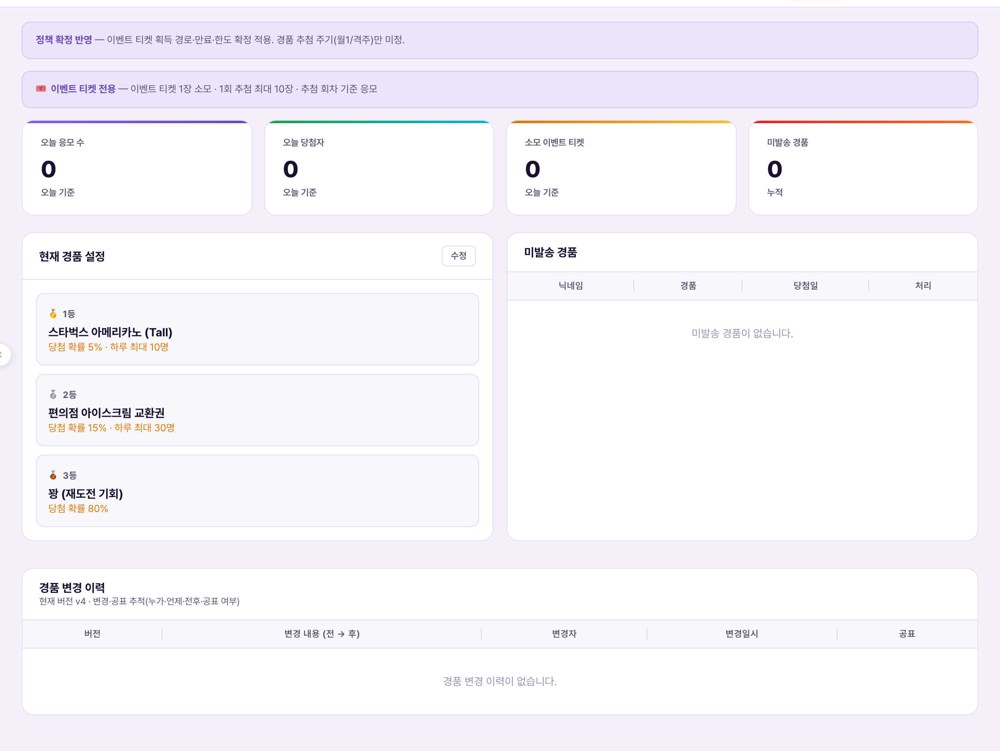
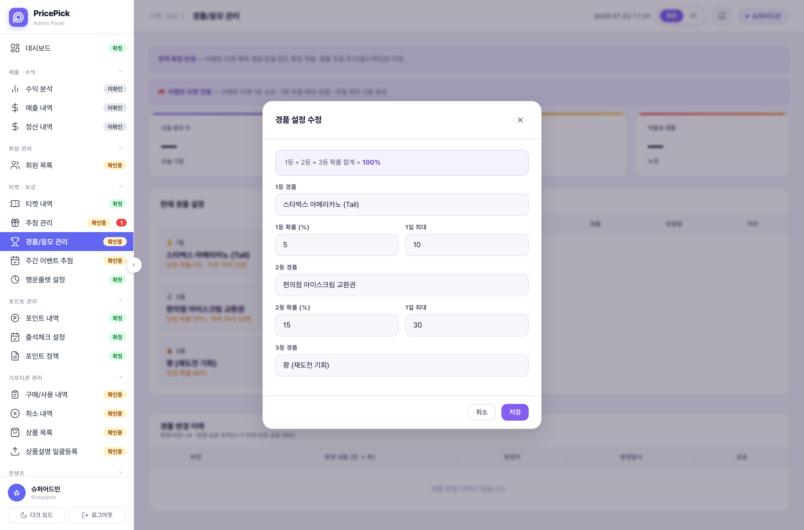

경품/응모 관리 = 이벤트 티켓으로 응모하는 추첨에서 "1등·2등·3등이 각각 무엇이고, 당첨 확률이 몇 %인지"를 정하는 설정 화면. 이 화면 자체는 추첨을 실행하지 않는다 — 여기서 정한 확률표를 실제로 소비해서 당첨자를 뽑는 곳은 주간 이벤트 추첨 화면이다. 즉 여기는 리모컨, 추첨 실행은 다른 화면이라는 관계를 먼저 이해해야 한다. 이벤트 티켓의 소모·한도(1회 최대 10장)·확률 비례 배정 등 핵심 정책은 이미 확정됐고, 이 화면에 남은 미정은 딱 하나 — 경품 추첨 주기(월 1회 vs 격주)뿐이다(화면 상단 배너가 직접 이렇게 표시한다).Quản lý quà tặng/ứng tuyển = màn hình cài đặt xác định "hạng 1·hạng 2·hạng 3 lần lượt là gì, xác suất trúng thưởng bao nhiêu %" trong đợt rút thưởng dùng vé sự kiện để ứng tuyển. Bản thân màn này không thực thi việc rút thưởng — nơi thực sự tiêu thụ bảng xác suất đã cài ở đây để chọn người trúng là màn Rút thưởng sự kiện hàng tuần. Nói cách khác, cần hiểu trước quan hệ đây là remote, việc thực thi rút thưởng nằm ở màn khác. Các chính sách cốt lõi như tiêu thụ vé sự kiện·giới hạn (tối đa 10 vé/lượt)·phân bổ xác suất theo tỷ lệ đã được chốt, và điều duy nhất còn để ngỏ ở màn này là chu kỳ rút thưởng (1 tháng/lần hay 2 tuần/lần) — chính banner ở đầu màn hình cũng hiển thị điều này.
화면 최상단에는 안내 배너 2개가 고정 노출된다 — "정책 확정 반영 — 이벤트 티켓 획득 경로·만료·한도 확정 적용. 경품 추첨 주기(월1/격주)만 미정."과 🎟 "이벤트 티켓 전용 — 이벤트 티켓 1장 소모 · 1회 추첨 최대 10장 · 추첨 회차 기준 응모". 그 아래 KPI 4장, "현재 경품 설정" 카드, "미발송 경품" 테이블, "경품 변경 이력" 테이블 순서로 이어진다.Ở đầu màn hình luôn hiển thị cố định 2 banner thông báo — "Đã áp dụng chính sách đã chốt — Áp dụng đã chốt về đường tích·hết hạn·giới hạn vé sự kiện. Chỉ còn chu kỳ rút thưởng (tháng 1/2 tuần) là chưa xác định." và 🎟 "Chỉ dùng vé sự kiện — tiêu 1 vé sự kiện · tối đa 10 vé/lượt rút · ứng tuyển theo đợt rút". Bên dưới lần lượt là 4 thẻ KPI, thẻ "Cài đặt quà hiện tại", bảng "Quà chưa gửi", bảng "Lịch sử thay đổi quà".

| 요소Thành phần | 의미Ý nghĩa | 바꾸면 생기는 일Điều gì xảy ra khi thay đổi |
|---|---|---|
| KPI 4장4 thẻ KPI 오늘 응모 수 · 오늘 당첨자 · 소모 이벤트 티켓 · 미발송 경품Số ứng tuyển hôm nay · Người trúng hôm nay · Vé sự kiện đã tiêu · Quà chưa gửi | 앞 3개는 오늘 기준 실시간 집계, 마지막(미발송 경품)만 누적 값이다3 thẻ đầu là số liệu thời gian thực tính theo hôm nay, riêng thẻ cuối (quà chưa gửi) là giá trị tích lũy | 설정을 바꿔도 안 움직인다 — 실제 응모·발송 행위가 일어나야만 값이 바뀐다Dù đổi cài đặt cũng không thay đổi — chỉ khi có hành vi ứng tuyển·gửi quà thực tế thì giá trị mới đổi |
| 현재 경품 설정 카드Thẻ cài đặt quà hiện tại 🥇1등·🥈2등·🥉3등 3단 구성Cấu trúc 3 hạng 🥇hạng 1·🥈hạng 2·🥉hạng 3 | 지금 실제로 적용 중인 확률표. 1등 5%(하루 최대 10명)·2등 15%(하루 최대 30명)·3등 80%(꽝, 재도전 기회) — 합이 정확히 100%다Bảng xác suất đang thực sự áp dụng. Hạng 1 5% (tối đa 10 người/ngày)·hạng 2 15% (tối đa 30 người/ngày)·hạng 3 80% (trượt, cơ hội thử lại) — tổng đúng 100% | "수정" 버튼으로 편집모달을 열어 저장하면 이 카드가 즉시 새 값으로 바뀐다(다음 섹션 참고)Nhấn nút "Sửa" mở modal chỉnh sửa rồi lưu thì thẻ này đổi ngay sang giá trị mới (xem mục sau) |
| 미발송 경품 테이블Bảng quà chưa gửi 닉네임·경품·당첨일·처리Biệt danh·quà·ngày trúng·xử lý | 당첨은 확정됐지만 아직 실물/기프티콘을 발송하지 않은 대기열. 현재 데모 데이터는 "미발송 경품이 없습니다"로 비어 있다Hàng chờ những người đã chắc chắn trúng thưởng nhưng chưa gửi quà thực/gift·voucher. Dữ liệu demo hiện tại đang trống, hiển thị "Không có quà chưa gửi" | "발송" 버튼을 누르면 그 줄이 대기열에서 빠진다 — 발송 여부는 이 테이블에서만 처리, 다른 화면과 연동 없음Nhấn nút "Gửi" thì dòng đó biến mất khỏi hàng chờ — việc gửi hay chưa chỉ xử lý ở bảng này, không liên kết với màn khác |
| 경품 변경 이력 카드Thẻ lịch sử thay đổi quà 버전/변경 내용(전→후)/변경자/변경일시/공표Phiên bản/Nội dung thay đổi (trước→sau)/Người đổi/Thời gian đổi/Công bố | 등수별 확률·경품 내용이 언제·누가·무엇을 바꿨는지 추적하는 감사 로그. 카드 부제에 "현재 버전 v4"라고 표시된다Log kiểm toán theo dõi ai·khi nào·đổi gì về xác suất·nội dung quà theo hạng. Phụ đề thẻ hiển thị "Phiên bản hiện tại v4" | 편집모달 저장 시에만 새 행이 추가돼야 하는 구조. 현재 데모는 "경품 변경 이력이 없습니다"로 비어 있다 — 아래 주의 참고Về cấu trúc, chỉ thêm dòng mới khi lưu modal chỉnh sửa. Demo hiện tại đang trống, hiển thị "Không có lịch sử thay đổi quà" — xem lưu ý bên dưới |
"현재 경품 설정" 카드의 "수정" 버튼을 누르면 뜨는 편집 화면이다.Đây là màn chỉnh sửa hiện ra khi nhấn nút "Sửa" ở thẻ "Cài đặt quà hiện tại".

| 요소Thành phần | 의미Ý nghĩa | 바꾸면 생기는 일Điều gì xảy ra khi thay đổi |
|---|---|---|
검증 안내 문구Dòng nhắc kiểm tra hợp lệ1등 + 2등 + 3등 확률 합계 = 100% | 모달 상단에 고정 노출되는 규칙 안내 — 3개 등급의 확률을 더하면 반드시 100%가 돼야 한다는 제약Dòng quy tắc hiển thị cố định ở đầu modal — ràng buộc rằng tổng xác suất của 3 hạng phải đúng bằng 100% | 1등·2등 확률을 조정하면 3등 확률은 나머지로 자동 채워지는 구조로 보인다(아래 참고)Có vẻ khi chỉnh xác suất hạng 1·hạng 2 thì xác suất hạng 3 tự động điền phần còn lại (xem bên dưới) |
| 1등 필드 3개3 trường hạng 1 경품명(텍스트) · 확률(%) · 1일 최대(명)Tên quà (chữ) · Xác suất (%) · Tối đa/ngày (người) | 현재 값: 스타벅스 아메리카노(Tall) · 5% · 10명Giá trị hiện tại: Cà phê Starbucks Americano (Tall) · 5% · 10 người | 저장 즉시 "현재 경품 설정" 카드와 다음 응모부터 반영돼야 하는 값Giá trị cần được phản ánh ngay khi lưu vào thẻ "Cài đặt quà hiện tại" và áp dụng từ lượt ứng tuyển kế tiếp |
| 2등 필드 3개3 trường hạng 2 | 현재 값: 편의점 아이스크림 교환권 · 15% · 30명Giá trị hiện tại: Phiếu đổi kem cửa hàng tiện lợi · 15% · 30 người | 1등과 동일한 방식으로 저장 즉시 반영Áp dụng ngay khi lưu, tương tự hạng 1 |
| 3등 필드 1개뿐Chỉ có 1 trường hạng 3 경품명(텍스트)만 있음 — 확률·1일 최대 입력칸 없음Chỉ có tên quà (chữ) — không có ô nhập xác suất·tối đa/ngày | 현재 값: 꽝(재도전 기회). 확률 80%는 화면에 표시는 되지만 이 모달에서 직접 입력하는 칸이 없다Giá trị hiện tại: Trượt (cơ hội thử lại). Xác suất 80% có hiển thị nhưng modal này không có ô để nhập trực tiếp | 확인 필요 — 1등·2등 확률 합의 나머지(100−5−15=80)를 3등이 자동으로 가져가는 구조로 추정되나, 이 필드가 진짜로 비활성(계산 전용)인지 아니면 이번 캡처에 단순히 안 잡힌 것인지는 100% 확정할 수 없다Cần xác nhận thêm — suy đoán là hạng 3 tự động nhận phần còn lại của tổng xác suất hạng 1·hạng 2 (100−5−15=80), nhưng chưa thể khẳng định chắc chắn liệu trường này thực sự bị khóa (chỉ để tính toán) hay chỉ đơn giản là không xuất hiện trong ảnh chụp lần này |
| 취소 / 저장 버튼Nút Hủy / Lưu | 일반적인 모달 하단 액션Hành động thông thường ở cuối modal | "저장"을 누르면 확률 합 100% 검증을 통과해야 실제로 적용된다고 추정(확인 필요)Suy đoán rằng nhấn "Lưu" phải vượt qua kiểm tra tổng xác suất 100% mới thực sự được áp dụng (cần xác nhận thêm) |
이 화면이 정한 확률표가 실제 응모에서 어떻게 소비되는지의 흐름이다. 근거는 정책서의 이벤트 티켓 규정 — 응모하면 티켓이 즉시 소모되고 취소 불가, 1회 추첨 최대 10장까지 응모, 당첨 확률은 응모 티켓 수에 비례, 당첨자 수만큼 비복원 추첨.Đây là luồng thể hiện bảng xác suất đã cài ở màn này được tiêu thụ thế nào trong lượt ứng tuyển thực tế. Căn cứ là quy định vé sự kiện trong tài liệu chính sách — ứng tuyển thì vé bị tiêu ngay lập tức và không hủy được, tối đa 10 vé/lượt rút, xác suất trúng tỷ lệ thuận với số vé ứng tuyển, rút không hoàn lại theo đúng số người trúng.
| 상황Tình huống | 운영자가 하는 일Việc Vận hành viên làm | 사용자에게 생기는 일Điều xảy ra với người dùng |
|---|---|---|
| 정기 경품 개편Cải tổ quà định kỳ 계절 프로모션으로 경품 교체Đổi quà theo khuyến mãi mùa vụ | "수정" 모달에서 1등·2등 경품명·확률·1일 최대 변경 → 합계 100% 검증 통과 → 저장Trong modal "Sửa" đổi tên quà·xác suất·tối đa/ngày của hạng 1·hạng 2 → tổng phải đạt 100% → lưu | 저장 시점 이후 응모부터 새 확률표 적용 — 과거 응모 결과는 그대로Áp dụng bảng xác suất mới từ lượt ứng tuyển sau thời điểm lưu — kết quả ứng tuyển trước đó giữ nguyên |
| 미발송 경품 누적Quà chưa gửi tồn đọng 당첨자는 확정됐는데 실물 발송이 밀림Người trúng đã chốt nhưng gửi quà thực bị chậm | "미발송 경품" 테이블에서 건별로 "발송" 버튼 클릭 → 대기열에서 제거Bấm nút "Gửi" cho từng dòng ở bảng "Quà chưa gửi" → xóa khỏi hàng chờ | 발송 처리 전까지 당첨은 확정 상태지만 실물·기프티콘 수령은 대기Trước khi xử lý gửi, trạng thái trúng thưởng đã chốt nhưng việc nhận quà thực·gift vẫn đang chờ |
| 추첨 주기 미확정 상태의 운영Vận hành khi chu kỳ rút thưởng chưa chốt 월 1회 vs 격주 — 정책 미결1 tháng/lần vs 2 tuần/lần — chính sách chưa chốt | 이 화면의 확률표 자체는 주기와 무관하게 지금 그대로 운영 가능. 실제 추첨 실행 주기는 주간 이벤트 추첨 화면에서 결정Bản thân bảng xác suất ở màn này vẫn có thể vận hành bình thường bất kể chu kỳ. Chu kỳ thực thi rút thưởng được quyết định ở màn Rút thưởng sự kiện hàng tuần | 사용자 입장에서는 언제 다음 추첨이 도는지가 주기 확정 전까지 안내 문구로만 노출(정확한 날짜 확정 불가)Với người dùng, đến khi chu kỳ được chốt thì thời điểm rút thưởng kế tiếp chỉ được thông báo bằng câu chữ chung (chưa thể chốt ngày chính xác) |
이 화면은 확률표 저장까지만 데모 범위다. 실제로 티켓을 소모하고 당첨자를 뽑는 추첨 실행은 주간 이벤트 추첨 화면이 담당하며, 그 화면의 "당첨 보상" 필드도 "기프티콘·실물 경품 (등수별 구성은 경품/응모 관리 연동)"이라고 명시해, 지금 이 화면이 상류(upstream) 설정 소스임을 CMS 스스로 확인해준다.Màn hình này chỉ trong phạm vi demo đến việc lưu bảng xác suất. Việc thực thi rút thưởng thực sự — tiêu vé và chọn người trúng — do màn Rút thưởng sự kiện hàng tuần đảm nhiệm, và trường "Phần thưởng trúng" của màn đó cũng ghi rõ "Gift·quà thực (cấu hình theo hạng liên kết với Quản lý quà tặng/ứng tuyển)", tự CMS đã xác nhận rằng màn này là nguồn cấu hình thượng nguồn (upstream).
현재 라이브 CMS 사이드바에서 이 메뉴의 사양 확정 배지는 "확인중"으로 표시된다 — 즉 지금 이 문서에 정리한 화면 구조·로직은 실화면 캡처를 근거로 최대한 정확히 기술했지만, 정책 자체가 아직 100% 확정된 상태는 아니라는 뜻이다. 위에 "확인 필요"로 표시한 항목들(3등 확률 필드 자동계산 여부, 서버 이중검증 여부, 변경 이력 로딩 여부)과 함께 다음 확정 사이클에서 재검증이 필요하다.Hiện tại ở sidebar CMS trực tiếp (live), huy hiệu xác nhận đặc tả của menu này đang hiển thị "Đang xem xét" — nghĩa là cấu trúc màn hình·logic được tổng hợp trong tài liệu này đã mô tả chính xác nhất có thể dựa trên ảnh chụp màn thực tế, nhưng bản thân chính sách chưa ở trạng thái chốt 100%. Cùng với các mục đã đánh dấu "cần xác nhận thêm" ở trên (hạng 3 có tự tính xác suất hay không, server có kiểm tra lại lần nữa hay không, lịch sử thay đổi có load đúng hay không), cần được xác minh lại ở chu kỳ chốt tiếp theo.